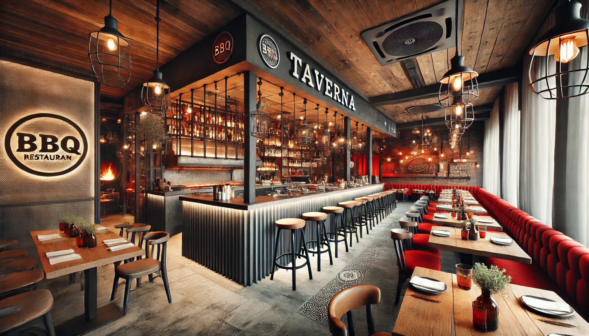
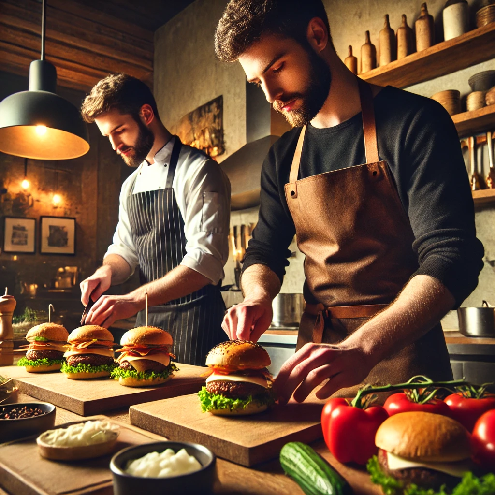

*Vid allergi, fråga personalen.
Hur beställer jag?Välkommen till Taverna, en anrik restaurang med över 40 års gastronomisk historia och en ny, spännande era som väntar! Tidigare hyllad för sitt italienska kök står Taverna redo att inviga sin nyöppning i början av det kommande året.
I hjärtat av Taverna möts tradition och förnyelse när restaurangen tar en kulinarisk resa mot den oemotståndliga smaken av amerikansk BBQ.
Nya ägare har investerat både tid och passion för att skapa en atmosfär där gästerna kan fördjupa sig i en autentisk BBQ-upplevelse med varje utsökt tugga. Den nya atmosfären på Taverna är lika inbjudande som den delikata maten. Moderna detaljer smälter samman med rustika inslag för att skapa en avslappnad och trivsam stämning.
Oavsett om du söker en intim familjemiddag eller en kväll i goda vänners lag kommer Taverna vara platsen för en smakfull upplevelse. Så håll ögonen öppna för den storslagna nyöppningen i början av 2025!
Välkommen till oss.
Adress: Reastauranggatan 6
Telefonnummer: 0123 - 456789